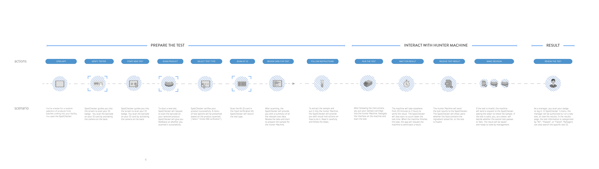
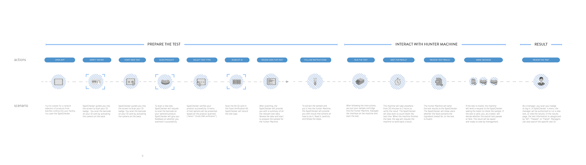
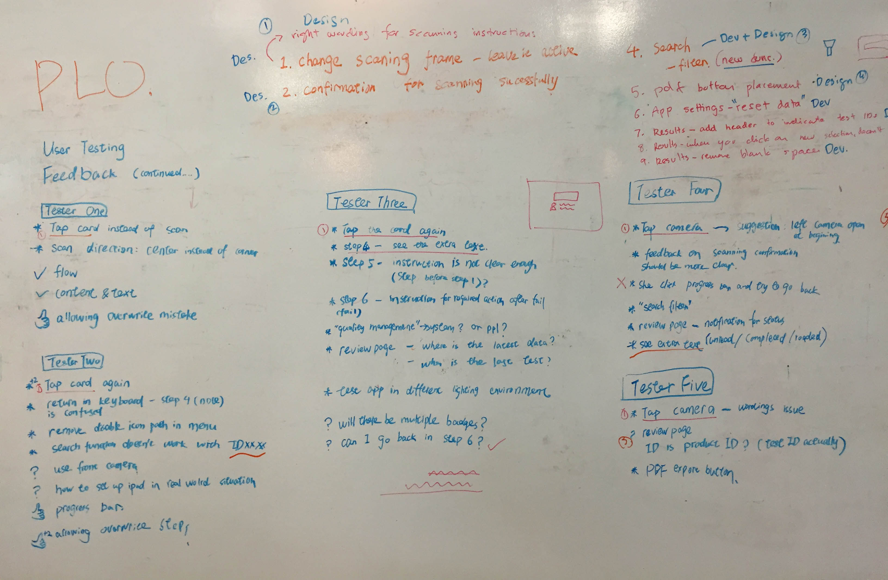

SpotsChecker
Product Design
I joined SAP Lab Canada in 2015 as an interaction designer under their emerging technology team. During my time there, I work with developers to design and develop SpotChecker, an in-house DNA Testing iPad application, to mitigate food fraud in retailer's supply chain.
Table of Content
---
1. Problem
2. Ideation
3. Design Decision
4. User Flow
5. Design Features
6. Development & Testing
7. Takeaways
Problem Space
Food fraud is widespread
I began the process by understanding the problem space for target audience groups. Firstly, I researched on what is food fraud and understand that it is widespread nowadays.
Retailers are feeling the pain of food fraud
Under this context, retailers are feeling the pain of food fraud due to the following reasons:

Ideation
What if retailer can find out food fraud issue in house?
Normally, the communication among retailers and lab is time consuming. It took at least two weeks to test a product in external lab and return it back to retailer. The spend on lab testing is also costly and retailer can't make massive amount test. If retailer can do food fraud testing in their own distribution center, it saves times and money!
Design Decisions
Digestible human design that integrate with testing machine.
In order to understand the retailer's traditional food fraud testing process, we simulated the lab tesing environment. Via the simulation, I realized that the testing process include the sampling the product via chemistry technology and putting the sample into testing machine. The process is trivial but not hard. The pain point is read, understand, and follow the scientifc termonology on instruction.
Therefore, to deliever in-house testing solution, the key is to deliever human design that can faciliate learning how to test and make test task easier.
User Flow
How can we design for people?
We synthesize the data into an information model that maintains the awareness about the type of users we are designing for. This info model is called persona, which help us empathy the user, force us to stick to provide design solution that fits the right user needs.
 We also try to map out user's experience on using the products. By conducting the journey map below, we try to understand the touchpoint for users.

We also try to map out user's experience on using the products. By conducting the journey map below, we try to understand the touchpoint for users.

Design Features

1. Simplifying DNA Testing --- SpotChecker provides retailers with a new way to test their products, simplifying DNA testing via faster process, easier content, better testing machine integration.
2. Marrying business data with scientific intelligence --- With the help of SpotChecker, retailers can now merge product information (business data) with the science data from DNA Testing Machines.
3. Centralized Results --- Instead of looking at test results from different testing machines, all the test results are sent to SpotChecker, allowing easier test reviews and faster decision making.
4. Streamlined Process --- Users can always jump back and forth between screens by clicking the navigation button at the bottom. With the help of the header title and progress bar, users never get lost. Additionally, if they scan something, they can click “RE-SCAN” to scan again.
5. Ease of use --- To avoid human error, SpotChecker enables barcode scanning instead of typing information. The color palette is designed for dim lighting environments like in a warehouse. The dark background and blue colour creates contrast for testers to view results easier.
Development and Testing
After pitching the static mockup to the project manager, I develop the mockup into an interactive prototype. By using the prototype to do user testing, I got feedback and redesign the interface.

As the design got approved, I create style guideline for developers. The design was turned into the development!
Takeaways
Be friends with developers.
For the 12 weeks at SAP, I learned an immense amount of lesson ranging from creating a prototype to communicating with others to bring a product to life. I learned to be proactive to get feedback and develop my product into its full potential. I also learned to break out of the comfort zone to try something completely different, which brought me closer to achieving the initial project goals. I also learned how to take initiative to bring an awesome idea into an actual product. I participated in a Hackathon with a project manager from the Protect and Care team, engineers, and designers to design something we were all passionate about. With this idea, we got the first place in Hackathon. I can’t share the project publicly, but if you would like to know more about this hackathon project, drop me an email!